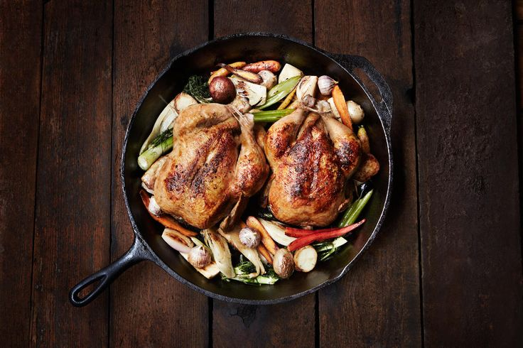

Suggestions for you
Cornish Hen
Cook Time: 45 minutes
Prep Time: 30 Minutes
"Crusty garlic bread and a nice light Chianti wine complement this meal very well."

Steak and Vegtables
Cook Time: 45 minutes
Prep Time: 30 Minutes
"Skirt steak is well-marbled and should be cook medium rare; any more, it will toughen."
My Recipes

Roasted Vegtables
Cook Time: 15 minutes
Prep Time: 15 Minutes
"A casserole dish of seasonal vegetables that is so easy to prepare. It can be made a day ahead - just reheat before serving. Lemon juice can be substituted for balsamic vinegar, and you can use baking potatoes if you don't have any Yukon Golds on hand."
Spring Rolls
Cook Time: 15 minutes
Prep Time: 15 Minutes
"These spring rolls are a refreshing change from the usual fried variety, and have become a family favorite. They are great as a cool summertime appetizer, and are delicious dipped in one or both of the sauces."
Flatbread
Cook Time: 15 minutes
Prep Time: 15 Minutes
"I made this flatbread pizza for us out of leftovers from our last dinner there. We used the satay sauce as the “base,” cut up some grilled chicken, and then I scattered on some cheese, scallions, cilantro, and fresh chili peppers. Because this flatbread recipe has a lot of bold flavors and some spicy heat, we cool it down using a little dairy, fresh cilantro, carrot, and lime juice. It’s all about balance."
Cranberry Apple Pie
Cook Time: 20 minutes
Prep Time: 45 Minutes
"This is a modified apple pie recipe my mother has had for years. I prefer a combination of Braeburn, Fuji, and McIntosh apples."